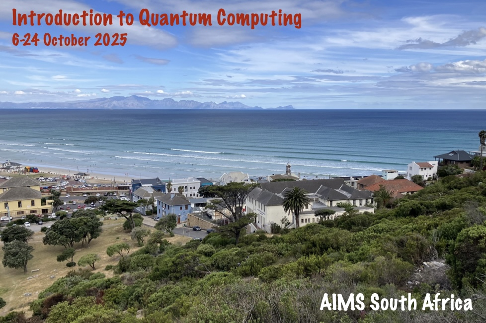

Welcome to the website for the AIMS "Intro to Quantum Computing" Course 2025, taking place between the 6th and the 24th of October 2025. This course is taught by Ryan Sweke, who can be reached at rsweke@aims.ac.za. Additionally, the tutors for this course are Abdallah, Maria, Yannick, Florian and Milanto. Feel free to reach out to Ryan, or any of the tutors, at any time!
Apart from providing an introduction to the fundamentals of quantum computing, quantum information and quantum many-body physics, this course is meant as preparation for the "1st AIMS Workshop and School on the Theory of Quantum Learning Algorithms", to be held at AIMS South Africa from the 27th to the 30th of October 2025.